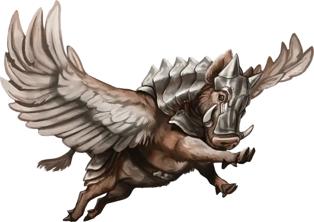

Космический хряк
Space Swine
Средний Зверь, без мировоззрения

Класс Доспеха 11 (16 с полулатным бардом)
Хиты 22 (4к8 + 4)
Скорость 40 футов, летая 40 футов
| мод | спас | ||
|---|---|---|---|
| СИЛ | 12 | +1 | +1 |
| ЛОВ | 12 | +1 | +1 |
| ТЕЛ | 12 | +1 | +1 |
| мод | спас | ||
|---|---|---|---|
| ИНТ | 4 | −3 | −3 |
| МДР | 10 | +0 | +0 |
| ХАР | 3 | −4 | −4 |
Навыки Восприятие +4, Выживание +4
Чувства пассивное Восприятие 14
Опасность 1/4 (50 опыта)
Бонус мастерства +2
Действия
Укус. Рукопашная атака оружием: +3 к попаданию, досягаемость 5 фт., одна цель. Попадание: 4 (1к6 + 1) колющего урона.
Описание
Космические хряки — это вид крылатых кабанов, которых довары разводят для разных нужд. Они могут служить верховыми животными для Маленьких существ, а также являются прекрасными следопытами и отличными вьючными животными. Космические хряки, обученные для сражений, обычно экипированы в полулатный бард, и зовутся смертоносными визгунами.
Полностью взрослая особь достигает высоты 3 футов в холке и 5-6 футов в длину. Они едят практически все, но предпочитают трюфели. Кроме того, космические хряки очень вкусные, если их поджарить и подать с яблочным соусом.